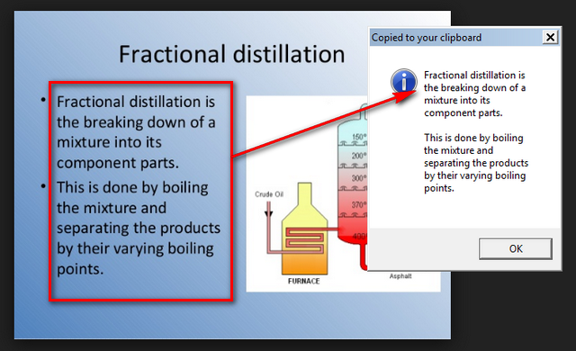
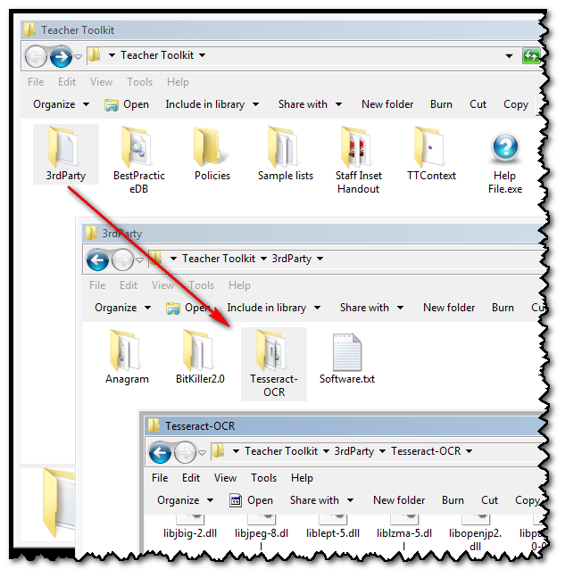
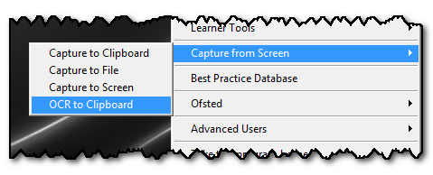

OCR to Clipboard - Acquire Text from Image
(Shortcut WindowsKey and ALT and Left Drag)
It can be incredibly useful to extract editable text from a picture:

To do this, you will need a copy of the Tesseract open source Optical Character Recognition (OCR) Engine, which is available under the Apache 2.0 license.
If it is not already on your computer, you can download it from here:
http://digi.bib.uni-mannheim.de/tesseract/
The software needs to be located in a folder called Tesseract-OCR inside the 3rdParty folder, located next to the Teacher Toolkit:

Once this is in place, the menu item and shortcut will become active:

Hold down the WindowsKey and ALT key:
While holding these, CLICK your mouse and DRAG a rectangle over the text image you would like to acquire.
The image will be converted into text and placed on your clipboard.